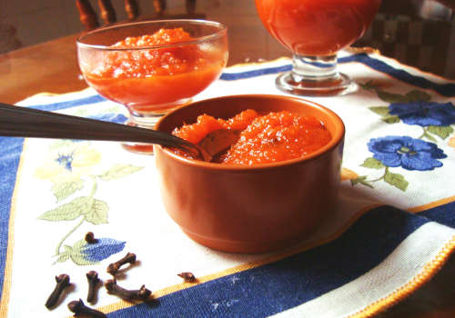
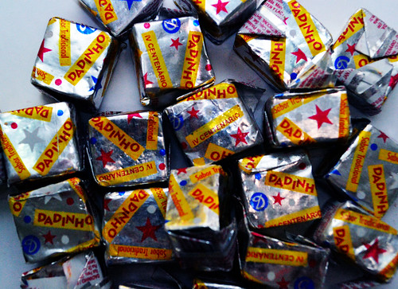
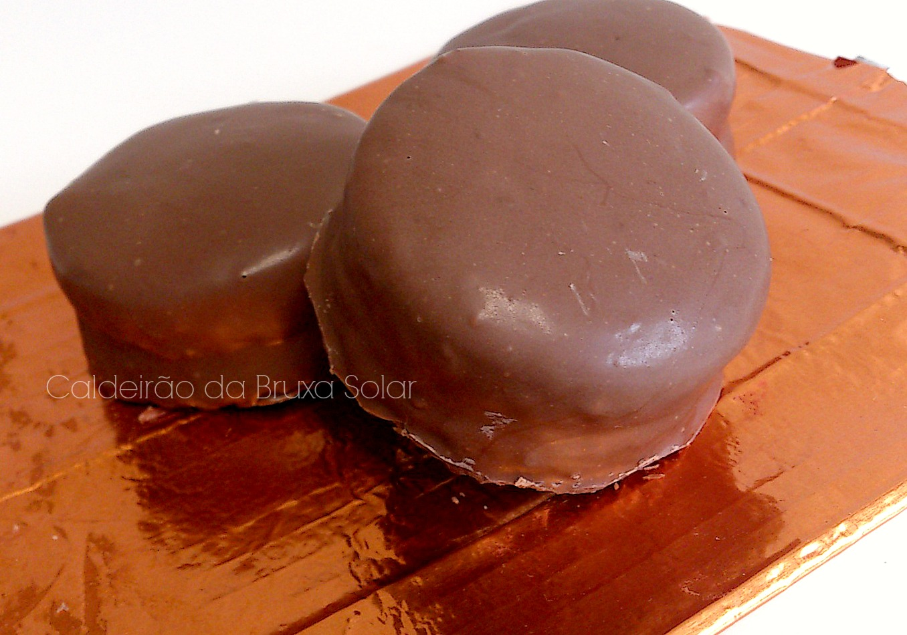
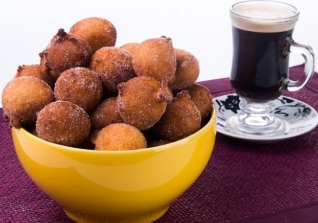

GreEAHEm
Greetings.
(in a non-ominous way)
having a chat with a wizard, I decided to trail a similar way of thinking as their's.
may you wonder what it is but I shall keep this for myself.
this will be one of the few times, to not limit to the only, that I direct a monologue to the viewer, i.e. You.
if you wish to immerse, think of this as a home, my home! In neocities. The reason you're here, and I'm not, is whatever you come up with.
I hope you find it as comfortable as I do!
being more straightforward...
you'll my find many of my likings here but here's some spoilers...
Major breakthrough
abóbora ("a" as in "father"; first "o" as in "shock" and second as in "bow")
stands for Pumpkin, because there's a
pumpkin amorphous sweet

that I adore and it's definitively the best thing in the world.
I also love a
variant of Reese's

we have here, Cinnamon rolls, one I've seen people calling Honey Cakes, but I prefer
pão de Mel
 and last
but not least
bolinho de chuva
 .
(free translation: lil rain cake [way better than
"dumplings"])
i really enjoy doing a multitude of things, but mostly art, aaand I
tend to do all of them at the same time as any normal sensible
person would.
-
The ones I often practice are:
- illustration;
- (digital, pixel or default, and trad [mostly inkpen])
- photography;
- animation;
- music;
- (any with bass)
all focusing either on horror or ambient but sometimes I do silly stuff.
my inspiration mainly comes from:
there are a *ton* more, but these are the "personality defining" ones
I enjoy rpg too! Delving in
GUMSHOE and investigation in general,
so Esoterrorists, Trail of Cthulhu, etc, but I do DnD too
My most obvious one is coding, especially front-end, but I aim to
someday be a game-dev at least in one game!
The ones I consume:
Movies
Im a big fan of horror and animation in general, so my top 3 is
Coraline, Skinamarink and Across the Spiderverse. The amount of
anxiety that i get watching these is insane.
(specially Skinamarink but that's reasonable)
Music
anything with cool bass, but rock, post
punk, jazz and indie games OST's ( I like a LOT but the go for is
Life is Strange!).
I really go for indie in
everything, but mostly, and speaking of which...
Games
i could go for hours but, as I said, it's intend to be
indicatives around this web. But worry not fellow internaut, for I shan't
leave you with nothing.
Any games with rich universe or art design breaks all my
cognitive functions and scratches the brain like no other escapism. So
I'd say, for the moment, The Eternal, and previously mentioned,
Life is Strange (specially the Captain
Spirit standalone), Blasphemous and
Fran Bow.
Reading
as for reading I don't have thaaat much enthusiasm, but anything that
relates with the other topics (game dev, indie stuff, music, etc) is cool
and hard to reads (in a technical sense).
My top three, hmmm...
- Angústia
DivinaComeddia- Oyasumi Punpun
Angústia bends the reading process with it's 'anguishing' structure and plot.
For a 1930's book that's pretty rad, specially with the context Graciliano,
the author, wrote it.
Commedia doesn't need much introduction, dood really got his name as an
anachronic good quality adjective, "Dantesque".
Punpun is solely to be very contradictory >:)
jk
it was one of the first mangas I got to read and I really like the way
Inio drives it's plot and characters, two childhood friends with a fucked
up life that end up just being really bad for each other despite their
efforts.
That's it! Krilly was working on the background but I need his help for other stuff, hopefully this won't get vandalized.
back to the top